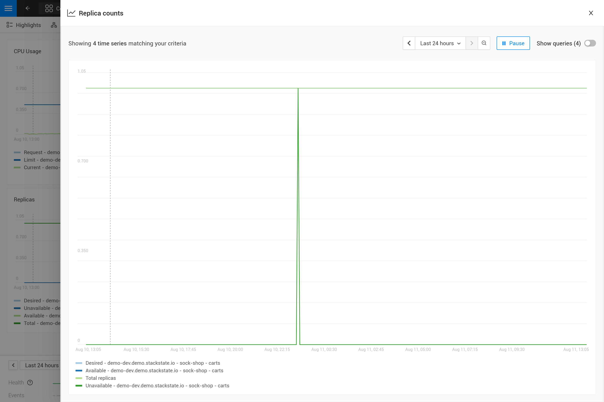

Añadir gráficos personalizados a los componentes
Descripción general
SUSE® Observability ya proporciona muchos gráficos métricos por defecto en la mayoría de los tipos de componentes que representan recursos de Kubernetes. Se pueden añadir gráficos métricos adicionales a cualquier conjunto de componentes siempre que sea necesario. Al añadir métricas a los componentes hay dos opciones:
-
Las métricas ya son recopiladas por SUSE® Observability pero no se visualizan en un componente, por defecto.
-
Las métricas aún no son recopiladas por SUSE® Observability en absoluto y, por lo tanto, no están disponibles aún.
Para la opción 1, los pasos a continuación te indicarán cómo crear un enlace de métrica que configurará SUSE® Observability para añadir una métrica específica a un conjunto específico de componentes.
Para la opción 2, asegúrate de que las métricas están disponibles en SUSE® Observability enviándolas a SUSE® Observability utilizando el protocolo de escritura remota de Prometheus. Continúa añadiendo gráficos para las métricas a los componentes SOLO después de asegurarte de que las métricas están disponibles.
Creando un enlace de métrica
Por ejemplo, los pasos añadirán un enlace de métrica para el Replica counts de los despliegues de Kubernetes. Este enlace de métrica ya existe en SUSE® Observability, por defecto.
Crea un esquema del enlace de métrica
Abre el archivo YAML de metricbindings.yaml en tu editor de código favorito para modificarlo a lo largo de esta guía. Puedes usar la CLI para Probar tu StackPack.
- _type: MetricBinding
chartType: line
enabled: true
identifier: urn:stackpack:my-stackpack:shared:metric-binding:node-memory-bytes-available-scheduling
layout:
metricPerspective:
section: Resources
tab: Kubernetes Node
name: Memory available for scheduling (Custom)
priority: medium
queries:
- alias: ${cluster_name} - ${node}
expression: max_over_time(kubernetes_state_node_memory_allocatable{cluster_name="${tags.cluster-name}", node="${name}"}[${__interval}])
scope: (label = "stackpack:kubernetes" and type = "node")
unit: bytes(IEC)
La sección de consultas y ámbito se completará en los siguientes pasos. Ten en cuenta que la unidad utilizada es short, que simplemente renderizará un valor numérico. En caso de que aún no estés seguro sobre la unidad de la métrica, puedes dejarlo abierto y decidir la unidad correcta al escribir la consulta PromQL.
Selecciona los componentes a enlazar
Guarda una vista de la perspectiva de topología y utiliza los filtros (Filtros → Topología → Cambiar a STQL) para consultar los componentes que necesitan mostrar la nueva métrica. Los campos más comunes para seleccionar la topología en los enlaces métricos son type para el tipo de componente y label para seleccionar todas las etiquetas. Por ejemplo, para las ampliaciones:
type = "deployment" and label = "stackpack:kubernetes"
El filtro de tipo selecciona todas las ampliaciones, mientras que el filtro de etiquetas selecciona solo los componentes creados por el stackpack de Kubernetes (el nombre de la etiqueta es stackpack y el valor de la etiqueta es kubernetes). Este último también se puede omitir para obtener el mismo resultado. Todos los filtros de componentes de consulta STQL pueden ser utilizados para filtrar.
Cambia al modo avanzado para copiar la consulta de topología resultante y ponerla en el campo scope del enlace métrico.
|
Los enlaces de métrica solo soportan los filtros de consulta. Las funciones de consulta como |
Escribe la consulta PromQL
Ve al explorador de métricas de tu instancia SUSE® Observability, http://your-instance/#/metrics, y utilízalo para consultar la métrica de interés. El explorador tiene autocompletado para métricas, etiquetas, valores de etiquetas, pero también funciones PromQL y operadores para ayudarte. Comienza con un rango de tiempo corto de, por ejemplo, una hora para obtener los mejores resultados.
Para el número total de réplicas, utiliza la métrica kubernetes_state_deployment_replicas. Para mostrar los gráficos de métricas de los datos de series temporales, amplía la consulta para hacer una agregación utilizando el parámetro ${__interval}:
max_over_time(kubernetes_state_deployment_replicas[${__interval}])
En este caso específico, utiliza max_over_time para asegurarte de que el gráfico siempre muestre el mayor número de réplicas en cualquier momento dado. Para rangos de tiempo más largos, no se muestra una breve caída en las réplicas. Para enfatizar el menor número de réplicas, utiliza min_over_time en su lugar.
Copia la consulta en la propiedad expression de la primera entrada en el campo queries del enlace métrico. Utiliza Total replicas como un alias para que aparezca en la leyenda del gráfico.
|
En SUSE® Observability, el tamaño del gráfico de métricas determina automáticamente la granularidad de la métrica mostrada en el gráfico. Las consultas de PromQL se pueden ajustar para hacer un uso óptimo de este comportamiento y obtener un gráfico representativo de la métrica. Escribir PromQL para gráficos explica esto en detalle. |
Vincula la serie temporal correcta a cada componente.
El enlace de métrica con todos los campos completados:
_type: MetricBinding
chartType: line
enabled: true
tags: {}
unit: short
name: Replica counts
priority: MEDIUM
identifier: urn:stackpack:my-stackpack:metric-binding:my-deployment-replica-counts
queries:
- expression: max_over_time(kubernetes_state_deployment_replicas[${__interval}])
alias: Total replicas
scope: type = "deployment" and label = "stackpack:kubernetes"
Crearlo en SUSE® Observability y ver el gráfico de "Conteo de réplicas" en un componente de despliegue da un resultado inesperado. El gráfico muestra los conteos de réplicas para todas las ampliaciones. Lógicamente, uno esperaría solo una serie temporal: el conteo de réplicas para este despliegue específico.

Para solucionar esto, haz que la consulta de PromQL sea específica para un componente utilizando información del componente. Filtra en suficientes etiquetas de métricas para seleccionar solo la serie temporal específica para el componente. Esta es la "vinculación" de la serie temporal correcta al componente. Para cualquiera con experiencia en la creación de paneles de Grafana, esto es similar a un panel con parámetros que se utilizan en las consultas del panel. Cambiemos la consulta en el enlace de métrica a esto:
max_over_time(kubernetes_state_deployment_replicas{cluster_name="${tags.cluster-name}", namespace="${tags.namespace}", deployment="${name}"}[${__interval}])

La consulta de PromQL ahora filtra por tres etiquetas, cluster_name, namespace y deployment. En lugar de especificar un valor real para estas etiquetas, se utiliza una referencia variable a los campos del componente. En este caso, se utilizan las etiquetas cluster-name y namespace, referenciadas usando ${tags.cluster-name} y ${tags.namespace}. Además, el nombre del componente se referencia con ${name}.
Las referencias de variable soportadas son:
-
Cualquier etiqueta de componente, usando
${tags.<label-name>} -
El nombre del componente, usando
${name}

|
El nombre del clúster, el espacio de nombres y una combinación del tipo y nombre del componente suelen ser suficientes para seleccionar las métricas de un componente específico de Kubernetes. Estas etiquetas, o etiquetas similares, suelen estar disponibles en la mayoría de métricas y componentes. |
Avanzadas
Más de una serie temporal en un gráfico
|
Solo hay una unidad para un enlace de métricas (se representa en el eje y del gráfico). Como resultado, solo deberías combinar consultas que produzcan series temporales con la misma unidad en un enlace de métricas. A veces puede ser posible convertir la unidad. Por ejemplo, el uso de CPU puede ser reportado en milicores o núcleos; los milicores se pueden convertir a núcleos multiplicando por 1000 así: |
Hay dos formas de obtener más de una serie temporal en un único enlace de métricas y, por lo tanto, en un único gráfico:
-
Escribe una consulta PromQL que devuelva múltiples series temporales para un único componente
-
Añade más consultas PromQL al enlace de métricas
Para la primera opción se da un ejemplo en la próxima sección. La segunda opción puede ser útil para comparar métricas relacionadas. Algunos casos de uso típicos:
-
Comparando réplicas totales frente a las deseadas y disponibles
-
Uso de recursos: límites, solicitudes y uso en un solo gráfico
Para añadir más consultas a un enlace de métricas simplemente repite pasos 3. y 4. y añade la consulta como una entrada adicional en la lista de consultas. Para los recuentos de réplicas de ampliación, hay varias métricas relacionadas que se pueden incluir en el mismo gráfico:
- _type: MetricBinding
chartType: line
enabled: true
tags: {}
unit: short
name: Replica counts
priority: MEDIUM
identifier: urn:stackpack:my-stackpack:metric-binding:my-deployment-replica-counts
queries:
- expression: max_over_time(kubernetes_state_deployment_replicas{cluster_name="${tags.cluster-name}", namespace="${tags.namespace}", deployment="${name}"}[${__interval}])
alias: Total replicas
- expression: max_over_time(kubernetes_state_deployment_replicas_available{cluster_name="${tags.cluster-name}", namespace="${tags.namespace}", deployment="${name}"}[${__interval}])
alias: Available - ${cluster_name} - ${namespace} - ${deployment}
- expression: max_over_time(kubernetes_state_deployment_replicas_unavailable{cluster_name="${tags.cluster-name}", namespace="${tags.namespace}", deployment="${name}"}[${__interval}])
alias: Unavailable - ${cluster_name} - ${namespace} - ${deployment}
- expression: min_over_time(kubernetes_state_deployment_replicas_desired{cluster_name="${tags.cluster-name}", namespace="${tags.namespace}", deployment="${name}"}[${__interval}])
alias: Desired - ${cluster_name} - ${namespace} - ${deployment}
scope: type = "deployment" and label = "stackpack:kubernetes"

Usando etiquetas de métrica en alias
Cuando una única consulta devuelve múltiples series temporales por componente, esto se mostrará como múltiples líneas en el gráfico. Pero en la leyenda, todas usarán el mismo alias. Para poder ver la diferencia entre las diferentes series temporales, el alias puede incluir referencias a las etiquetas de métrica usando la sintaxis ${label}. Por ejemplo, aquí hay un enlace de métricas para la métrica "Reinicios de contenedor" en un pod, ten en cuenta que un pod puede tener múltiples contenedores:
type: MetricBinding
chartType: line
enabled: true
id: -1
identifier: urn:stackpack:my-stackpack:metric-binding:my-pod-restart-count
name: Container restarts
priority: MEDIUM
queries:
- alias: Restarts - ${container}
expression: max by (cluster_name, namespace, pod_name, container) (kubernetes_state_container_restarts{cluster_name="${tags.cluster-name}", namespace="${tags.namespace}", pod_name="${name}"})
scope: (label = "stackpack:kubernetes" and type = "pod")
unit: short
Ten en cuenta que el alias hace referencia a la etiqueta container de la métrica. Asegúrate de que la etiqueta esté presente en el resultado de la consulta; cuando falta la etiqueta, el ${container} se renderizará como texto literal para ayudar en la resolución de problemas.
Distribuciones
Cada componente puede estar asociado con varias tecnologías o protocolos como k8s, redes, entornos de tiempo de ejecución (por ejemplo, JVM), protocolos (HTTP, AMQP), etc.
En consecuencia, se puede mostrar una multitud de métricas diferentes para cada componente. Para una lectura más fácil, SUSE® Observability puede organizar estos gráficos en pestañas y secciones.
Para mostrar un gráfico (MetricBinding) dentro de una pestaña o sección específica, necesitas configurar la propiedad de diseño.
Cualquier MetricsBinding sin un diseño especificado se mostrará en una pestaña y sección llamada Other.
Aquí hay un ejemplo de configuración: